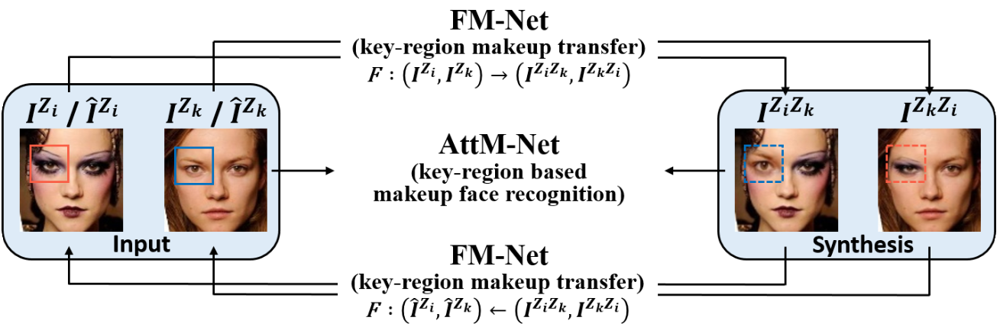
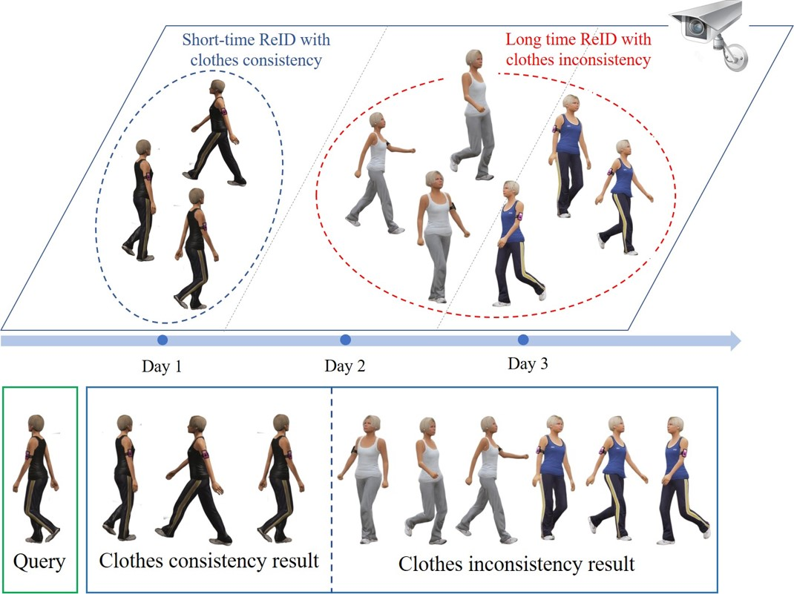
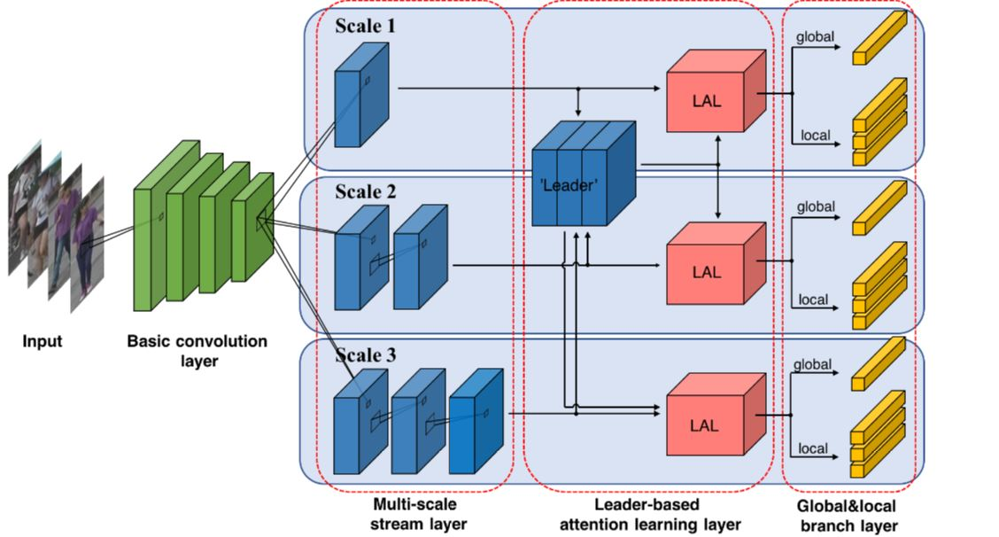
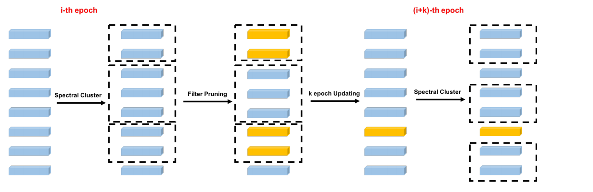

Hi! I am currently a fifth-year Ph.D. student at Fudan University, under the supervision of
Prof. Yanwei Fu and
Prof. Xiangyang Xue.
I received my Bachelor's degree from Xidian University in 2015, and majored in Mathematics
and Applied Mathematics during my undergraduate study.
More details can be found in my CV.
Email: xlqian15 AT fudan.edu.cn or xuelinq92 AT gmail.com
Research Interest
My research interests span computer vision, machine learning and deep learning.
At present, I devote to the research of person re-identification, few-shot learning, face recognition,
image generation and object counting.
Open-source projects can be found at my GitHub,
and publications can be found at Google Scholar.
News
We have released a new cloth-changed ReID dataset. VC-Clothes Dataset.
[Dataset]
One paper is accepted by CVPR 2020. FMMu-Net.
One paper is accepted by TPAMI 2019. MuDeep_V2.
One paper is accepted by ICCV 2017. MuDeep_V1. [Code]
Publications

FMMu-Net: Face Morphological Multi-branch Network for Makeup-invariant Face Verification
IEEE/CVF Conference on Computer Vision and Pattern Recognition (CVPR), 2020
[Paper]


Leader-based Multi-Scale Attention Deep Architecture for Person Re-identification
IEEE transactions on pattern analysis and machine intelligence (TPAMI), 2019
[Paper]
![[VC-Clothes]](images/eccv18_framework.png)

Scsp: Spectral clustering filter pruning with soft self-adaption manners
arXiv preprint arXiv:1806.05320, 2018
[Paper]
Academic Activities
Reviewer for CVPR, ECCV, ICCV, AAAI.